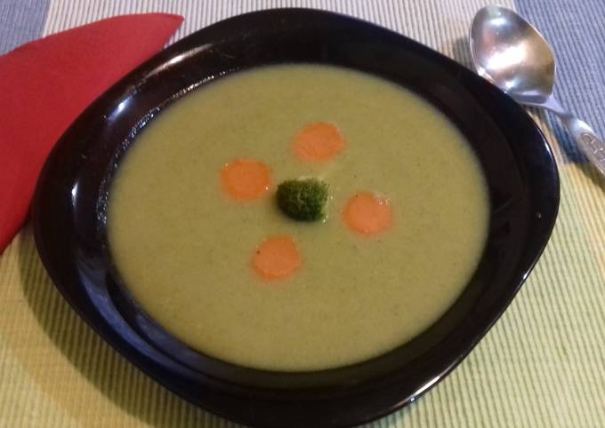
50 dkg brokkoli
3 közepes db sárgarépa
1 közepes db burgonya
1 közepes db vöröshagyma
2 ek olívaolaj
1 db leveskocka (zöldség)
1 csipet só
7 dl víz
A zöldségeket megtisztítjuk (a brokkoli szárát is meghámozzuk), apróra vágjuk.
A hagymát olajon megfonnyasztjuk.
Felöntjük 7 dl vízzel, hozzáadjuk a leveskockát, a sót, a zöldségeket, és puhára pároljuk.
Díszítéshez kevés zöldséget kiveszünk, a többit botmixerrel pürésítjük.
Tálaláskor barackmag vagy kökénymagolajat locsolhatunk rá.
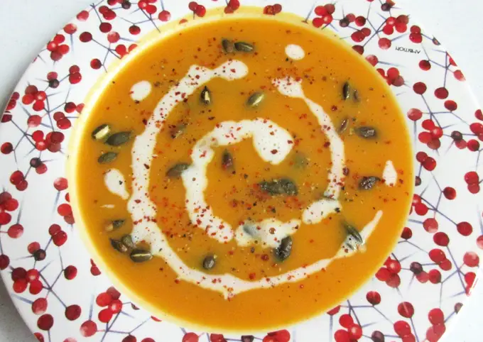
5 dkg vaj
1 db közepes fej vöröshagyma, 50 dkg sütőtök (tisztítva mérve), 2 db közepes sárgarépa (kb. 20 dkg tisztítva mérve)
10 dl víz, 1-2 ek citromlé, 1 tk balzsamecet
2 db erőleveskocka (vagy ételízesítő)
1 tk só, 1-2 ek cukor vagy méz, 1/2 mk őrölt fehér bors, 1/2 mk őrölt fahéj, 1/2 mk őrölt gyömbér
1 dl főzőtejszín
1/4 mk chilipehely (elmaradhat)
1/4 mk durvára őrölt fekete bors (elmaradhat)
5 dkg pirított tökmag
Vajon megdinszteljük az apróra vágott vöröshagymát, majd hozzáadjuk a sütőtököt és a sárgarépát.
Felöntjük vízzel, hozzáadjuk a leveskockát és a fűszereket, majd puhára főzzük.
Pürésítjük, majd ízesítjük cukorral, citromlével, tejszínnel és sóval.
Megpirítjuk a tökmagot serpenyőben.
Tálaláskor tejszínnel megcsorgatjuk, balzsamecettel, chilipehellyel és borssal ízesítjük.
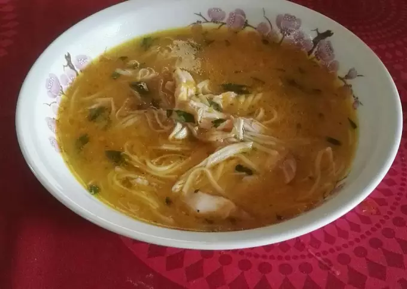
2 db egész csirkecomb
1 teáskanál só, 2 evőkanál liszt, 1 evőkanál olívaolaj
3 dkg vaj
2 db sárgarépa, 1 db közepes vöröshagyma, 2 gerezd fokhagyma
4 dl hideg víz
1,2 liter húsleves
ízlés szerint őrölt fekete bors, ízlés szerint só, ízlés szerint petrezselyemzöld
1 dl vastagabb cérnametélt
Csirkecombokat sós vízben megfőzzük. Kihűlés után feldolgozzuk. Vöröshagymát finomra vágjuk, fokhagymát, sárgarépát lereszeljük.
Olívaolajat, vajat és a répát lábasba tesszük, és addig pároljuk, míg a répa kis levet enged. Hozzáadjuk a vágott hagymát, majd beletesszük a fokhagymát.
2 evőkanál liszttel megszórjuk, majd keverjük, míg a zsiradék fel nem veszi a lisztet. Ráöntjük a 4 dl hideg vizet, majd a félretett húslevet. Összefőzzük, a cérnametéltet beletesszük, elkavarjuk. Beletesszük a felaprított húst. Ízlés szerint sózzuk, borsozzuk, összeforraljuk.
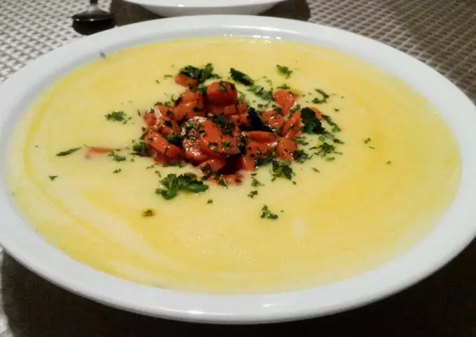
50 dkg burgonya
500 ml tej
500 ml víz
25 dkg vékony sárgarépa
5 dkg 82%-os vaj
1 evőkanál finomra vágott petrezselyem
Ízlés szerint só
2 db tojássárgája
A fél kg krumplit meghámozom, kockára vágva megfőzöm a fele mennyiségű sós tejes vízben. Nagyon kell rá figyelni, mert könnyen kifut.
A sárgarépát megtisztítom, vékony karikára vágom, és 3 dkg vajon, a petrezselyem nagy részével s egy pici sóval meghintve kis lángon megpárolom.
Amikor a burgonya megpuhult, leturmixolom, felöntöm a maradék tejjel és vízzel, állandó keverés közben felforralom.
Egy leveses tálban a maradék vajat elhabarom a két tojássárgájával,
Fokozatosan rámerem a forró levest, miközben keverem.
Beleteszem a megpárolt petrezselymes sárgarépát, megszórom a maradék petrezselyemmel és azonnal tálalom.
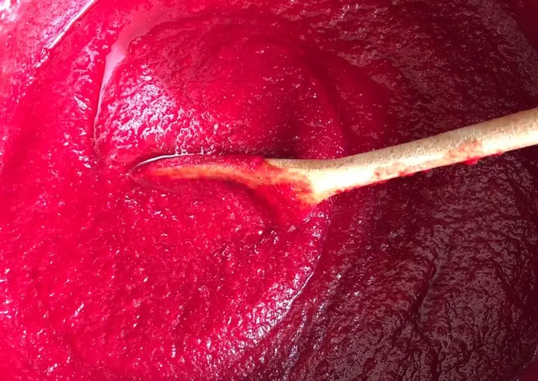
2 db cékla
2 db sárgarépa
1 db alma
Szükség szerint víz
3 ek joghurt
1 db leveskocka
Előkészítjük a répát, céklát, almát.
Megtisztítjuk és feldaraboljuk őket, egy lábasba tesszük.
Felöntjük annyi vízzel, ami ellepi és felforraljuk. Kb. 4 perc.
Ha felforrt, akkor beletesszük a leveskockát és alacsony lángon addig főzzük, amíg meg nem puhul minden hozzávaló. Kb. 12 perc.
Hagyjuk kihűlni.
Ha kihűlt, akkor mehet a turmixba. Botmixerrel is lehet, de úgy darabosabb maradhat.
Ha kész vagyunk, akkor keverünk bele joghurtot és kész is.
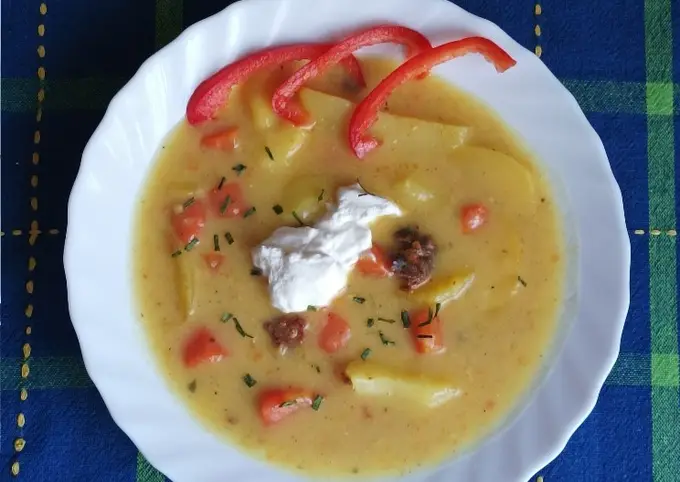
1 kg krumpli, 3 db nagy sárgarépa, 1 db vöröshagyma, 2 cikk fokhagyma
10 dkg füstölt kolbász, 5 dkg csípős füstölt kolbász
3 L húsleves alap vagy víz
3-4 db babérlevél
2 tk vegeta
1/2 mk őrölt köménymag, 1/2 mk őrölt bors
2,5 dl tejföl
1,5 ek liszt (habaráshoz)
A hozzávalókat előkészítem.
Egy edénybe zsírt teszek, majd beleteszem a vöröshagymát, és kicsit megpirítom.
Ráteszem a fokhagymát, a sárgarépát, a fűszereket. majd pár percig párolom.
Ráteszem a feldarabolt kolbászt, afeldarabolt krumplit, majd felengedem húslevessel vagy vízzel.
Beleteszem a babérlevelet, majd ráteszek egy fedőt, és hagyom főni. Addig a tejfölt és a lisztet elkeverem csomómentesre kevés vízzel.
Mikor már puha minden, hozzáadom a tejfölös habarást és az ecetet, majd jól kiforralom.
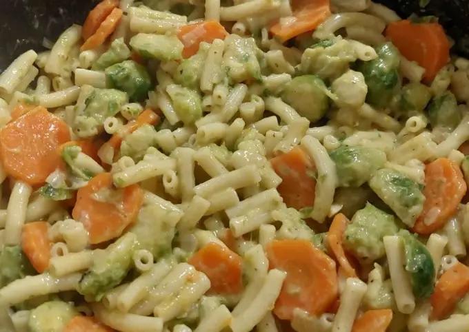
6 marék tojásmentes tészta
100 ml növényi főzőkrém
1 mk füstölt paprika
1 db zöldségleves kocka
Szükség szerint annyi víz, ami ellepi a zöldségeket
Ízlés szerint só, bors
1 db vöröshagyma
1 gerezd fokhagyma
1 db nagyobb répa
400 gr kelbimbó
2 ek sörélesztőpehely
A vöröshagymát, fokhagymát felaprítom. A répákat karikákra vágom, a kelbimbót, ketté vágom. Felmelegítem az edényt, olívaolajat. Megpirítom a vöröshagymát, majd ezt követik a fokhagymadarabok, só, bors, répa karikák. Ezután hozzáadom a félbevágott kelbimbókat. Kb. 5 perc pirítás után felengedem vízzel.
Beledobok egy zöldségkockát. Beleszórom a füstölt fűszer paprikát. Hagyom hogy felfőjön a víz, hozzáadok 6 maréknyi csőtésztát. Amikor a víz már majdnem teljesen elfőtt hozzáadom a főzőkémet és a sörélesztőpelyhet. Elkeverem és tálalhatom is.
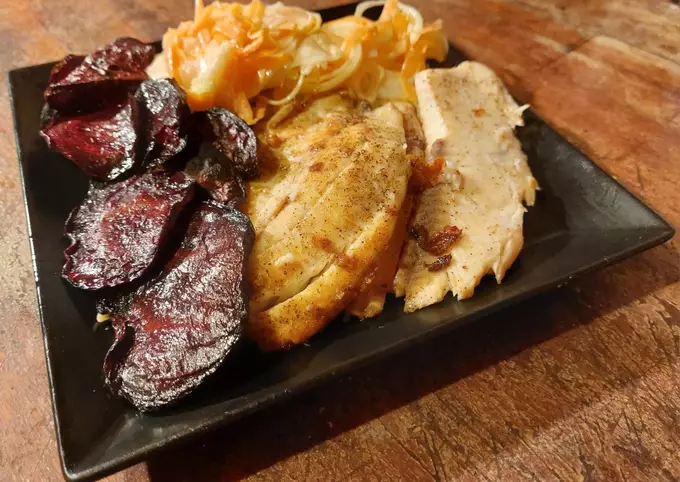
4 db cékla
1 tk só, 1/2 mk őrölt fekete bors
Kevés étolaj
1 kg tilápia filé
3 gerezd zúzott fokhagyma
Csipet só, csipet őrölt fekete bors, csipet őrölt édes pirospaprika
50 g olvasztott vaj
2 db sárgarépa, 3 db vajretek
2 fej sonkahagyma
2 ek tejföl, 2 ek majonéz, 2 tk cukor, 1 tk citromlé, 1 tk só
A céklát, retket, hagymát vékony karikákra vágjuk, a répát pedig lereszeljük.
A tejfölt, majonézt összekeverjük a sóval, borssal, cukorral és citromlével. Hozzáadjuk a zöldségeket, majd tálalásig hűtőbe tesszük.
Az olajat, sót, borsot összekeverjük, majd ebbe forgatjuk bele a céklát. Ropogósra sütjük előmelegített sütőben 150°C-on 20 perc alatt.
A halat sózzuk, borsozzuk. Az olvasztott vajat összekeverjük a fokhagymával, sóval, borssal és pirospaprikával, majd ebben sütjük meg a hal szeleteket serpenyőben.
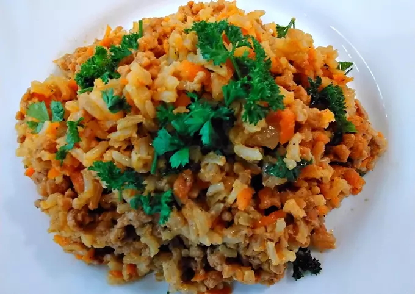
50 dkg darált hús / sertés
25 dkg barna rizs
15 dkg sárgarépa / reszelve
1 fej hagyma
2 gerezd fokhagyma
7 dkg paradicsompüré
5 evőkanál étolaj
Fűszerek ízlés szerint: só, őrölt fekete bors, kakukkfű, petrezselyemzöld
A rizst 2 evőkanál étolajon megpirítjuk, majd felöntjük 2x mennyiségű vízzel, és tetszés szerint fűszerezzük. Alacsony hőfokon megpároljuk.
A hagymát apróra vágjuk, majd 3 evőkanál étolajon kissé megpirítjuk. Hozzáadjuk a fokhagymát és a reszelt répát, tovább pirítjuk. Ezután belekeverjük a paradicsompürét.
Végül hozzáadjuk a darált húst, sót, borsot és kakukkfűvet. Adunk hozzá fél dl vizet, majd megpároljuk. A rizst összekeverjük a húsos répával.
A kész ételt megszórjuk petrezselyemzölddel, és készre fűszerezzük. Savanyúsággal, salátával vagy befőttel szervírozhatjuk.
600 gramm csirkemell
1 db vöröshagyma, 1 db lilahagyma, 2 gerezd fokhagyma
2-3 db sárgarépa, 1 db savanykás alma, 1 db narancs frissen facsart leve
1 evőkanál citromlé, 3 evőkanál méz, 2 evőkanál mustár, 20 ml olívaolaj
1 mokkáskanál gyömbérpor, 1 teáskanál korianderlevél, 1 teáskanál őrölt rozmaring, 1 mokkáskanál frissen őrölt fekete bors, 1 mokkáskanál chilisó, 1 evőkanál só
A zöldségeket feldolgozom.
Marinád elkészítése: Elkeverem az olívaolajat, mézet, fokhagymát, narancs levét, citromlevet, mustárt, gyömbérport, chilisót, korianderlevelet, őrölt rozmaringot, borsot, és sót.
A sárgarépát csíkokra, a hagymát nagyobb darabokra, az almát cikkekre vágom. A húst tisztítom, majd vastagabb csíkokra vágom.
A sárgarépa csíkokat, csirkemelleket marinádba megforgatom, tepsiben szétterített alma, hagyma darabokra helyezem.
Sütés 220°C-on, 35 percig fólia alatt.
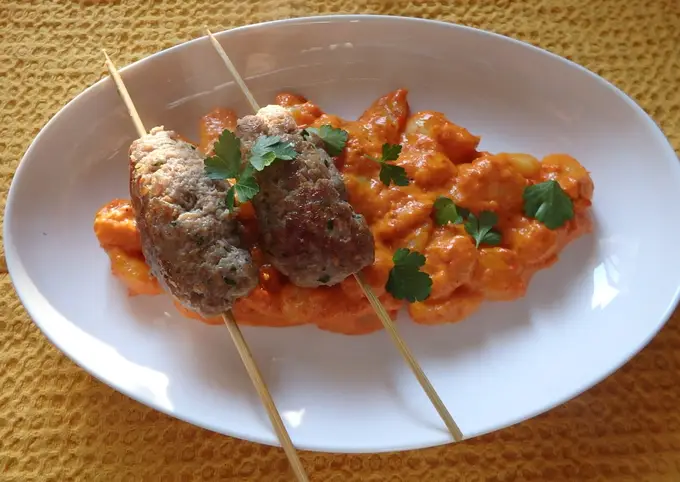
20 dkg répa, 40 dkg marhahús
1 kisebb vöröshagyma, 3 gerezd fokhagyma
1/4 tk római kömény, 3 ek étolaj, só, bors
50 dkg bolti gnocci
2 dl tejszín
3 ek Podravka ajvár
só, frissen őrölt bors
friss petrezselyemzöld
A répát reszeljük le, fonnyasszuk meg 2 evőkanál étolajon a hagymával, köménnyel és fokhagymával együtt.
A gnocchit főzzük meg. Olvasszunk vajat, borítsuk bele a gnocchit, pirítsuk 3-4 percig. Az ajvárt keverjük ki tejszínnel, majd öntsük a gnocchira. Forraljuk össze.
A köfte többi hozzávalóit dolgozzuk össze vele, hengereket formázunk belőlük. Forró serpenyőben 2-3 evőkanál olajon süssük 8-10 percen át.
Ezután nyársakra fűzzük. A gnocchit sózzuk, borsozzuk, majd petrezselyemmel megszórva köftével tálaljuk.
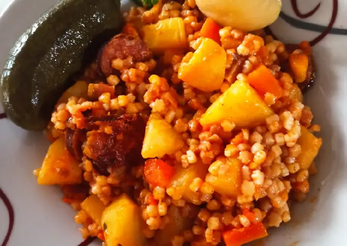
15 dkg füstölt kolozsvári szalonna, 20 dkg tarhonya
2 evőkanál olaj
1 db közepes vöröshagyma, 4 gerezd fokhagyma
1/2 db fehér paprika, 6 db közepes burgonya, 1 db nagyobb sárgarépa
1 evőkanál őrölt pirospaprika, 1 evőkanál vegeta, 1 evőkanál szárított zöldségkeverék, 1 teáskanál őrölt feketebors, 1 mokkáskanál őrölt fűszerkömény
Ízlés szerint só
5 dkg füstölt kolbász
A zöldségeket tisztítani, darabolni.
A kisebb kockára vágott szalonnát az olajon kisütni. A pörcöt félretenni. A visszamaradt zsiradékon a tarhonyát pirítani, majd az aprított hagymákat, paprikát, paradicsomot megdinsztelni.
Hozzáadni a kis kockára darabolt sárgarépát, a szeletelt kolbászt. Néhány percig együtt pirítani, majd felönteni 2 liter vízzel.
Amikor felforrt, belekerül a kockára vágott burgonya, a szalonnapörc és a fűszerek. Az egészet félpuhára főzni, majd hozzáadni a pirított tarhonyát.
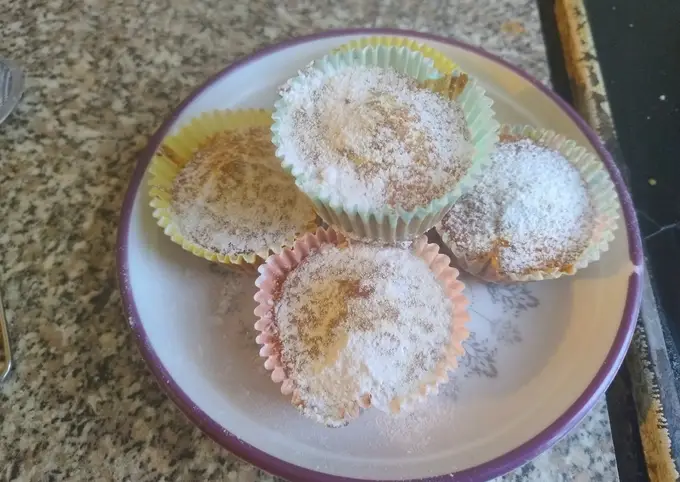
150 g margarin
250 g reszelt sárgarépa
200 g kristálycukor
200 g liszt
1,5 kk fahéj
2 tk sütőpor
2 tojás
Melegítsd elő a sütőt 180 °C-ra, majd olvaszd meg a margarint a mikrohullámú sütőben.
Hámozd meg és reszeld le a sárgarépát.
Egy tálban keverd össze a reszelt sárgarépát, a kristálycukrot és az olvasztott margarint.
Szitáld hozzá a lisztet, a sütőport és a fahéjat.
A tojásokat verd fel külön egy kis tálban, majd öntsd a masszához.
Kanalazd a masszát muffinformákba és süsd 20 percig.
Ha elkészült, szórd meg porcukorral.
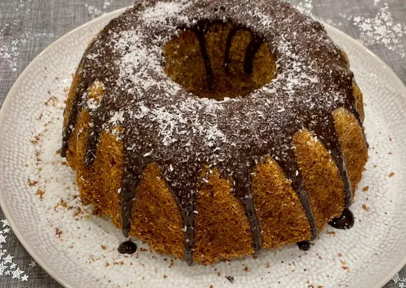
280 g reszelt sárgarépa
160 g liszt
120 g kókuszreszelék (és még egy kevés a kuglófforma kiszórásához)
100 g darált dió
150 g cukor
4 db tojás
1 db citrom reszelt héja
1 csomag sütőpor
1 dl olívaolaj
Bekapcsoljuk a sütőt 180°-ra.
Egy tálban összekeverjük az sárgarépát, tojást, cukrot, citromhéjat, olajat.
Egy másik tálban összekeverjük a zabot, diót, kókuszreszeléket és a sütőport.
Hozzákeverjük a száraz összetevőket a répás masszához.
Kiolajozott és kókuszreszelékkel megszórt kuglófformába töltjük és 180°-on 35 percig sütjük.
A 4 kocka étcsokit egy lábosban alacsony fokon felolvasztjuk és ráöntjük a kuglófra.
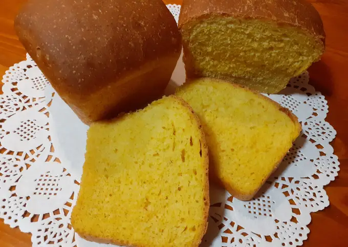
380 g liszt
100 g tisztított répa
4 g só
140 ml víz
5 g instant élesztő
1 evőkanál méz
25 g étolaj
Főzd meg, majd pürésítsd a répát.
Mérd ki a lisztet, majd add hozzá az alapanyagot és a répapürét.
Dagaszd, keleszd a tésztát egy órán át meleg helyen.
Formászd, majd tedd bele az olajjal kikent sütőformába a tekercset, majd pihentesd egy órát.
180°C-os sütőbe helyezd a kenyeret, majd 30 perc múlva vedd ki és hagyd kihűlni.
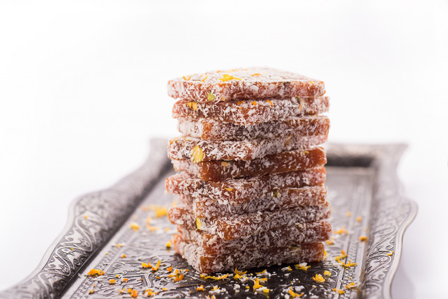
50 dkg sárgarépa
20 dkg kristálycukor
0.5 tk őrölt fahéj
1 tk vaníliaaroma
10 dkg dió, mogyoró, mandula vagy pisztáciabél
5 dkg kókuszreszelék
Meghámozzuk és aprítóban finomra vágjuk, vagy reszeljük a sárgarépát.
Hozzákeverjük a cukrot, a fahéjat és a vaníliát, majd hozzáadjuk 2,5 dl vizet.
Főzzük kis lángon, amíg az összes folyadék elpárolog. Közben lefedjük, de hagyunk egy kis részt a távozó hőnek.
Belekeverjük a durvára vágott dióféléket, majd a masszát egy sütőpapírral bélelt tepsibe simítjuk.
A hűtőbe tesszük legalább 1 órára, majd négyzetekre vágjuk és megforgatjuk mindegyiket a kókuszreszelékben.
400 g reszelt sárgarépa
130 g cukor
1 kk. kanál gm. őrölt fahéj
1 . kk. vanília aroma
kb. 100 ml víz
50-50 g dió és mandula (lehet más olajos mag is)
gluténmentes kókuszreszelék
A diót száraz serpenyőben megpirítjuk, majd durvára vágjuk.
A répát megtisztítjuk és lereszeljük.
Egy tálban összekeverjük a liszteket, a sütőport, a fahéjat és a sót.
A tojásokat habosra verjük a cukrokkal, majd hozzáadjuk az olajat.
Hozzáadjuk a lisztes keveréket, a sárgarépát és a diót, majd összeforgatjuk.
A masszát kivajazott tortaformába öntjük, és 180 fokos sütőben 30 percig sütjük.
Kihűtjük, majd hosszában félbevágjuk.
A vajas krémsajtot habosra keverjük, hozzáadjuk a vanília belsejét, a citrom héját és a porcukrot.
A mascarponés krémmel megkenjük a tortát.
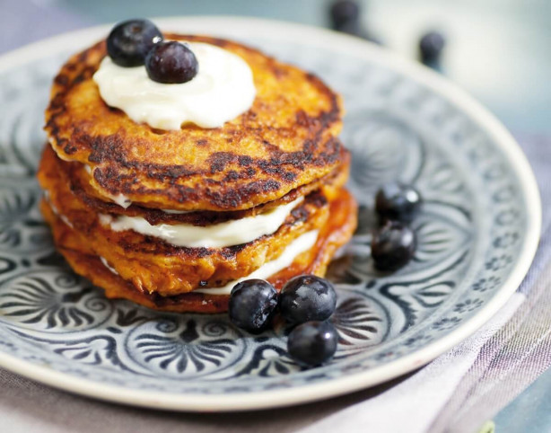
45 dkg sárgarépa, 2.5 dkg dió
15 dkg liszt
2 tk sütőpor
1 db tojás, 25 dl tej, 4 ek vaj, 17.5 dkg tejszínes krémsajt
0.25 tk só, 5 dkg porcukor, 4 ek barna cukor, 1 tk őrölt fahéj
Megtisztítjuk és reszeljük a répát.
A diót apróra vágjuk, majd összekeverjük a liszttel, sütőporral, fahéjjal, sóval és gyömbérrel.
Tojást habosra keverünk a barna cukorral és tejjel.
Hozzáadjuk a répát, majd a lisztes keverékbe forgatjuk.
30 percig pihentetjük a tésztát.
Egy tálban porcukrot és krémsajtot habosra keverünk.
Forró serpenyőben kevés vajon kisütjük a tésztát.
Palacsintákat készítünk, majd 50 fokos sütőben melegen tartjuk.
Kisütött palacsintákat és krémsajtot rétegezünk.
Friss gyümölccsel tálaljuk.
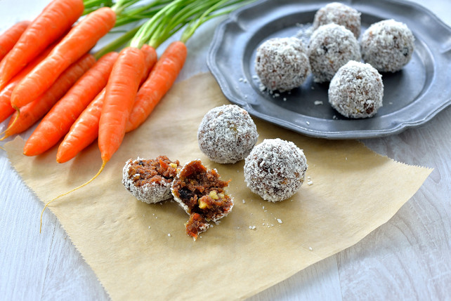
10 dkg dióbél
15 dkg aszalt datolya
2 db sárgarépa
1 tk cukrozatlan kakaópor
8 dkg kókuszreszelék
0.5 tk őrölt fahéj
0.5 tk őrölt szerecsendió
Só ízlés szerint
Késes aprítóba tesszük a diót és a datolyát, majd kissé darabosra vágjuk.
Hozzáforgatjuk a meghámozott és lereszelt sárgarépát, a kakaóport, a kókuszreszelék felét, a fűszereket, és 1 csipet sót.
Összedolgozzuk, majd a masszából kis golyókat formázunk.
Meghempergetjük mindet a maradék kókuszreszelékben, majd betesszük a hűtőbe a golyókat, hogy kissé megszilárduljanak.
Szobahőmérsékleten kínáljuk.